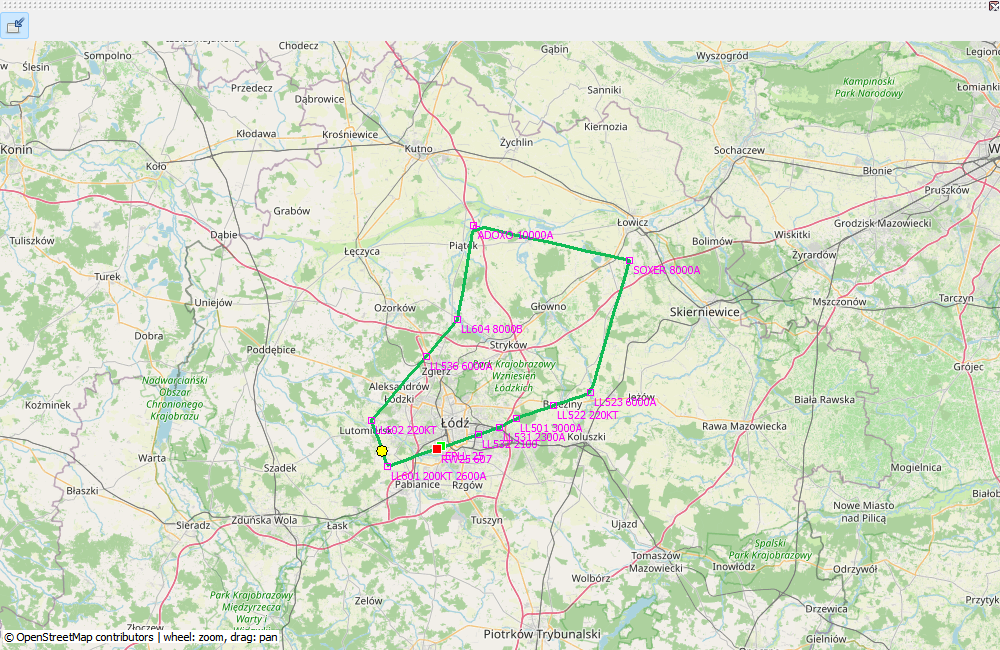

OpenStreetMap places recorded positions in terrain context. The track consists of measurements; magenta denotes the plan. Overlapping sections need not be drawn twice, while waypoint labels and available constraints remain. A line between samples is not a metre-by-metre measurement.
The example departs EPLL runway 25 via ADOX2W, ADOXO, SOXER, SOXE2T and LL501 to ILS Z 25 EPLL. Named procedure points and explicit restrictions illustrate the feature, not current navigation charts. Drag to pan, wheel to zoom and Fit to restore the route extent. Cached tiles work offline; a fresh base map requires a download.
The actual track is measured position history; the magenta route is a saved plan. They are distinct sources.
| Option / action | Behavior and limitations |
|---|---|
| Pan / zoom | Drag to pan, use the wheel or zoom buttons, and Fit to frame available data. Overview shows the library overview rather than a single instrument flight. |
| Tiles | Toggle online background tiles. Cached tiles may work offline; an empty uncached background is not missing GPS telemetry. |
| Planned route | Named fixes and available constraints accompany the magenta route. Coincident planned/actual segments avoid an unnecessary duplicate line. |
| Procedures | Available SID, STAR and approach data are resolved after reading the EFB plan and saved for replay. Published missed approaches are dark gray; holds use schematic symbols and retained parameters. |
| Coordinate-only points | A matching SimBrief route may restore a name where AIRAC cycles differ. This does not update the navigation database. |
| Export | Save a PNG illustration or export the track as KML for another viewer. Neither replaces a complete .mfzr backup. |
